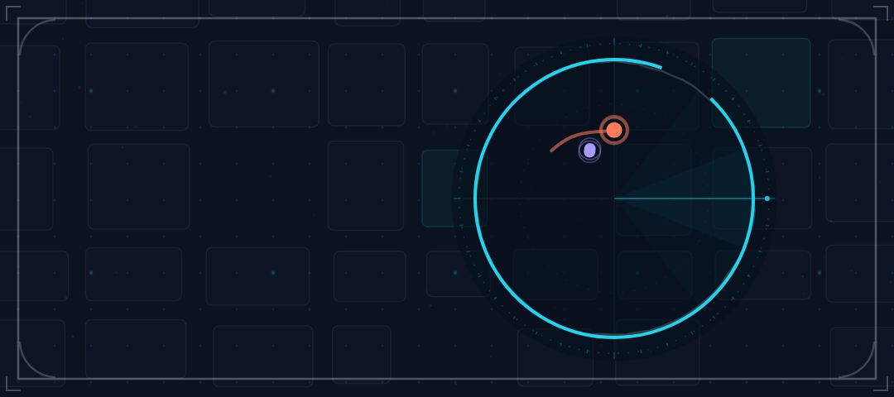
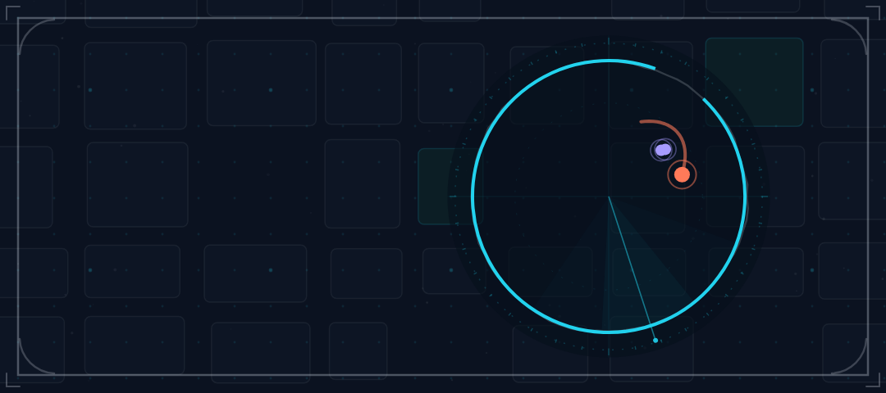
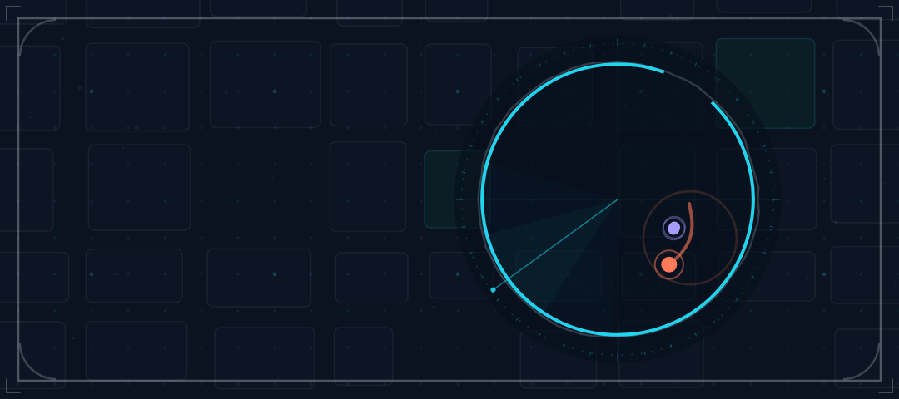
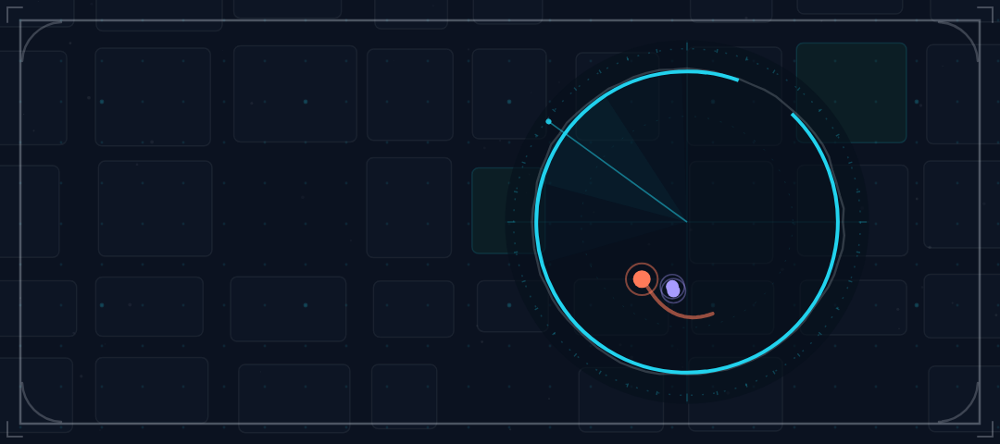
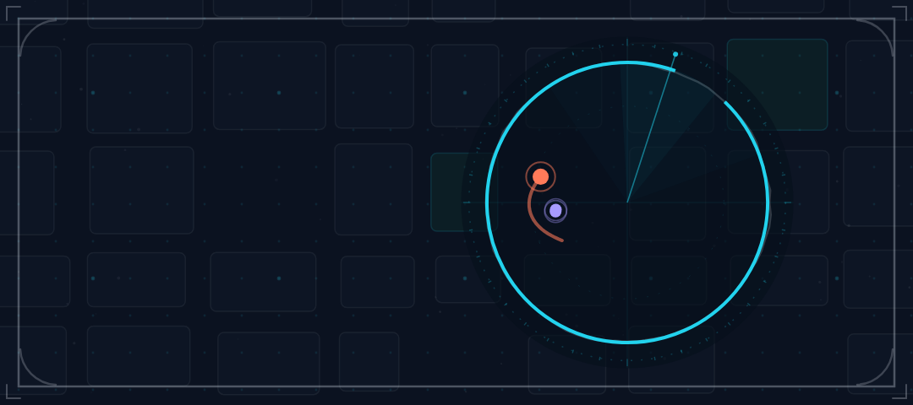

ManHunt app hero — Compose canvas key frames
Five frames of the 2–4 s in-app hero loop (implemented at 4.0 s, 60 fps): the Open Zone mark behaves as a radar scope — cyan zone ring with its deliberate gap, a rotating sweep, the coral Prey dot running a closed evasion route, violet Hunters fanning behind it, coral report pings. The canvas is 360 × 160 dp, exported here at 1080 × 480 px @3x; the compact app plate runs 2 Hunters (task-42 implementation) while the full banner plates run 5. Copy is Compose Text on the left third, never painted into the canvas (localisation + text scaling).





Reference layout (360 × 160 dp)
bodySmall descriptor
PREY / HUNTERS legend (localised)
chalk grid, pings
(text-free, decorative)
Put the canvas behind the whole card and keep the left ~42% free of dots so the copy never sits on a marker. The legend is Compose Text, so team names stay translatable (coral/violet are never the only cue).
Palette + contrast
Flat fills only — no gradients, glow or shadows. Cyan = field/referee, coral = Prey, violet = Hunters. Dots keep shape differences (Prey dot has a ring) as well as colour.
Reduced motion
When MotionDurationScale reports animations off, draw the τ = 0.0 frame as a still
(the first key frame above) and stop the loop. No information is lost: the zone, both teams and the
honest state of the chase are all in the still.
Frames rendered from the same deterministic seeded algorithm as the README/banner kit (src/motion-core.js · radarFrame()); the implementation spec, timing table and suggested Compose approach live in app/README.md. No app code was modified — client-polish owns implementation.